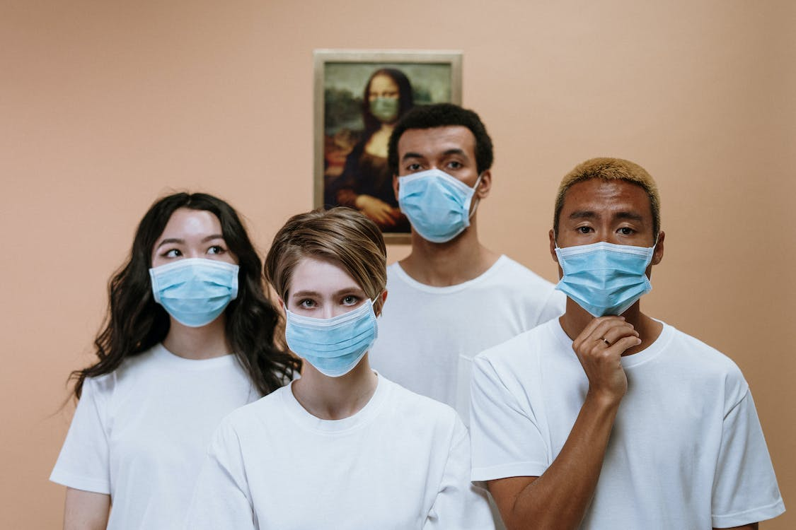

این نشان دهنده تغییر به اقدامات بلند مدت برای رسیدگی به ویروس کرونا است.

اقدام پس از آزمایش تأییدی برای تأیید فواید بالینی انجام شد.


در حالی که دستورات و قرنطینهها مدتهاست که از بین رفتهاند، این ویروس وجود ندارد و برای برخی آمریکاییها ماسک نیز وجود ندارد.
